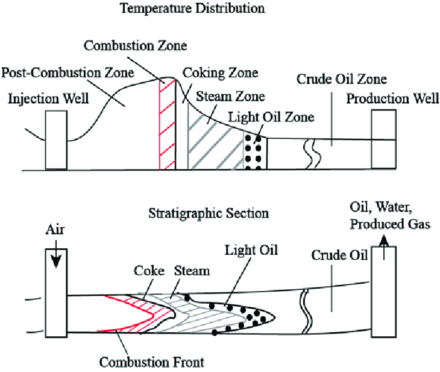

My Notes
Insitu Combustion for Enhanced Oil Recovery
Abstract:
Enhanced Oil Recovery (EOR) techniques are crucial in maximizing oil production from mature reservoirs. Among these methods, Thermal Enhanced oil recovery is a widely used technique for production of heavy oils. Thermal technique involves the application of heat to the reservoir to reduce the viscosity of the oil, making it easier to flow and be extracted. The thermal oil recovery process typically employs two main methods, steam injection and in-situ combustion. Thermal recovery is a general term for injection processes that introduce heat into a reservoir. Thermal recovery is used to produce viscous, thick oils with API gravities tending to very low value. These oils cannot flow unless they are heated and their viscosity is reduced enough to allow flow toward producing wells. During thermal recovery, crude oil undergoes physical and chemical changes because of the effects of the heat supplied. Heat reduces the viscosity of the oil, thus increasing the rate of production and improving the mobility ratio between the oil and the displacing fluid, which in turn decreases the producing gas- oil ratio or water-oil ratio. This blog covers a brief technical description of insitu combustion, its mechanism, technical requirements, and financial aspects.
Insitu Combustion Mechanism:
The process begins by injecting air or oxygen into the reservoir, igniting the crude oil. As the combustion front advances, the heat generated reduces the oil's viscosity, facilitating its flow towards production wells. Moreover, the high temperatures lead to the thermal cracking of heavier hydrocarbons into lighter fractions, increasing the overall yield. However, controlling the combustion front and managing combustion efficiency remain key challenges that necessitate comprehensive research and field studies to optimize the process.
- Injection of Air or Oxygen:
The insitu combustion process begins with the injection of air or oxygen into the reservoir through dedicated injection wells. The injected air or oxygen serves as the oxidizing agent that will support the combustion reactions with the crude oil present in the reservoir. - Ignition of Crude Oil:
Once the injection of air or oxygen starts, the crude oil in the reservoir comes into contact with the oxygen-rich environment. Due to the high temperature of the injected air or oxygen, the crude oil undergoes spontaneous ignition, initiating the combustion process. - Combustion Front Advancement:
As the combustion process progresses, a combustion front is formed at the interface between the burning crude oil and the unburned crude oil. The combustion front is characterized by the region where the combustion reactions actively take place. - Heat Generation and Oil Viscosity Reduction:
The primary effect of the combustion front is the intense generation of heat. The high temperatures in the combustion front cause thermal cracking of heavier hydrocarbons present in the crude oil. As a result, these heavier hydrocarbons break down into lighter fractions, reducing the overall viscosity of the crude oil. - Improved Oil Mobility:
The reduction in oil viscosity enhances the mobility of the crude oil. The heated and less viscous oil becomes more mobile and flows more easily through the reservoir rock towards the production wells. - Generation of Gases and Pressure Increase:
In addition to the heat generated, the thermal cracking of heavier hydrocarbons during insitu combustion produces gases such as methane, ethane, propane, and other hydrocarbons. These gases contribute to an increase in reservoir pressure, further assisting in the displacement of oil towards production wells.

Insitu Combustion Mechanism
Technical Requirements for Successful Insitu Combustion:
Implementing insitu combustion demands meticulous attention to critical technical aspects and parameters. Success hinges on maintaining specific temperature ranges, typically between 300°C to 500°C, playing a pivotal role in altering the oil's viscosity and promoting efficient flow towards production wells. Lowering the oil's viscosity is crucial to enhancing its mobility and ensuring effective displacement. Moreover, the high temperatures during insitu combustion induce thermal cracking of heavier hydrocarbons, generating gases like methane, ethane, propane, and other hydrocarbons. These gases contribute to increasing reservoir pressure, further enhancing oil recovery.
Porosity and permeability are critical considerations in successful insitu combustion. Higher porosity facilitates better heat transfer and fluid flow, while higher permeability aids the movement of displaced oil towards production wells. Reservoirs with suitable porosity and permeability characteristics are more conducive to successful insitu combustion. The choice of ignition mechanisms, such as electrical heaters, downhole burners, or chemical techniques, depends on reservoir conditions, safety considerations, and operational efficiency. Additionally, the air-to-fluid ratio plays a vital role, determining the oxygen concentration during injection. Achieving an optimal ratio is essential to ensure controlled combustion without damaging the reservoir matrix or causing undesired combustion front breakthroughs.
Continuous monitoring of the combustion process is indispensable to ensure adherence to planned advancements and to minimize unwanted side reactions, such as the premature oxidation of valuable reservoir components. Comprehensive data analysis and sophisticated monitoring techniques are employed to manage and fine-tune the insitu combustion process throughout implementation.
Cost and Implementation Considerations:
The financial aspects of insitu combustion projects encompass both initial investment and long-term profitability. The substantial costs associated with implementing insitu combustion include well preparation, infrastructure development, and safety measures to handle the combustion process. Moreover, advanced technology and continuous data analysis are essential for monitoring and optimizing the combustion front, further contributing to the expenses. However, successful insitu combustion can yield significant financial benefits, with the potential for substantial increases in oil recovery and extended production life of the reservoir. Therefore, effective project management requires a balanced approach, weighing upfront costs against the potential long-term returns.
Comparison with Other EOR Techniques:
In comparison to other EOR techniques, insitu combustion offers distinct advantages and limitations. Unlike water-based methods, insitu combustion eliminates the need for a constant supply of injected fluids, reducing operational complexity and costs. Furthermore, it is particularly efficient in recovering heavy and highly viscous oils, which present challenges for many other EOR techniques. However, insitu combustion's success depends on favorable reservoir conditions and control over the combustion front, making it unsuitable for every oilfield.
Advantages:
- Suitable for Heavy and Viscous Oil Reservoirs with Low Permeability: In-Situ Combustion is particularly effective in heavy oil reservoirs where the oil has high viscosity and flows poorly through the reservoir rock. The combustion process reduces the oil viscosity, making it easier to flow towards production wells.
- High Oil Recovery Rates: When properly implemented, it can lead to significant oil recovery rates, often exceeding those achieved by other Enhanced Oil Recovery (EOR) techniques. This is especially true in heavy oil reservoirs, which are less amenable to conventional production methods.
- Minimal External Fluid Injection: Unlike other EOR techniques such as steam injection, insitu requires relatively low amounts of external fluid injection. The combustion process generates heat and gases within the reservoir, creating a natural drive mechanism to displace oil towards production wells.
- Access to Deeper Reservoir Sections: Insitu combustion has the advantage of accessing deeper sections of the reservoir, which might be challenging for other recovery techniques. This capability allows for the recovery of additional oil reserves that were previously considered uneconomical to extract.
- Drive Mechanism (Combustion Front): For insitu combustion, a combustion front is formed within the reservoir, where the oil is ignited and burns, creating high-temperature and high-pressure conditions. This combustion front acts as a natural drive mechanism, pushing the heated oil towards the production wells.
Challenges:
- Combustion Front Stability: Maintaining the stability of the combustion front is one of the critical challenges. The combustion process involves complex interactions between the injected air (or air-steam mixture) and the reservoir rock and fluids. Variations in reservoir heterogeneity, rock properties, and fluid compositions can lead to uneven combustion and the risk of front breakthrough.
- Limited Applicability in Heterogeneous Reservoirs: The success of insitu combustion heavily depends on the reservoir's homogeneity. Reservoirs with high heterogeneity, varying rock permeability, and diverse fluid distributions may experience uneven combustion and reduced effectiveness of the process.
- Greenhouse Gas Emissions: Involves the burning of oil within the reservoir, which leads to the generation of greenhouse gases, such as carbon dioxide (CO2) and nitrogen oxides (NOx). Managing and mitigating these emissions is crucial to ensure the environmental sustainability of insitu projects.
- Injectivity Issues: It requires the injection of air or air-steam mixtures, and in reservoirs with low permeability, achieving sufficient injectivity can be problematic.
- Ignition and Extinction Concerns: Initiating and sustaining the combustion process can be complex and unpredictable. Proper ignition and continuous propagation of the combustion front are crucial for the success of the project. Premature front extinction can result in incomplete oil recovery.